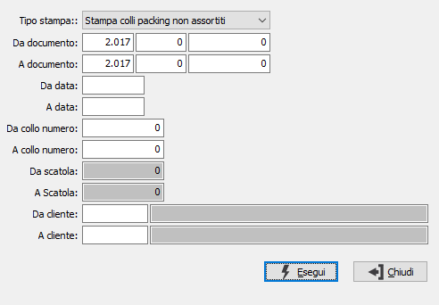

Stampa etichette colli
Il programma consente di effettuare la stampa delle etichette colli del packing, tramite la seguente maschera a video.

TIPO STAMPA: definisce il tipo di stampa; se stampare i colli dei packing che hanno l’assortimento oppure quelli dei packing non assortiti. Valori ammessi: Stampa colli packing non assortiti; Stampa colli packing assortiti.
DA DOCUMENTO: i tre campi contengono rispettivamente anno, serie e numero del documento da cui si vuole iniziare la selezione per la stampa. Confermando a vuoto, la selezione inizia dal primo documento compatibile con i successivi parametri.
A DOCUMENTO: i tre campi contengono rispettivamente anno, serie e numero del documento con cui si vuole concludere la selezione per la stampa. Confermando a vuoto, la selezione termina con l’ultimo documento compatibile con i successivi parametri.
DA DATA: data documento da cui si vuole iniziare la selezione per la stampa. Confermando a vuoto, la selezione inizia dalla prima data valida.
A DATA: data documento con cui si vuole concludere la selezione per la stampa. Confermando a vuoto, la selezione inizia dalla prima data valida.
DA COLLO NUMERO: campo numerico che indica il numero del collo dal quale si desidera iniziare la selezione per la stampa.
A COLLO NUMERO: campo numerico che indica il numero del collo con il quale si desidera terminare la selezione per la stampa.
DA SCATOLA: campo numerico che indica il numero della scatola da cui si desidera iniziare la selezione per la stampa. Il campo è attivo solo se il tipo di stampa prevede gli assortimenti.
A SCATOLA: campo numerico che indica il numero della scatola con cui si desidera terminare la selezione per la stampa. Il campo è attivo solo se il tipo di stampa prevede gli assortimenti.
DA CLIENTE: campo alfanumerico di otto caratteri che indica il cliente del documento dal quale si desidera iniziare la selezione.
DA CLIENTE: campo alfanumerico di otto caratteri che indica il cliente del documento con il quale si desidera terminare la selezione.